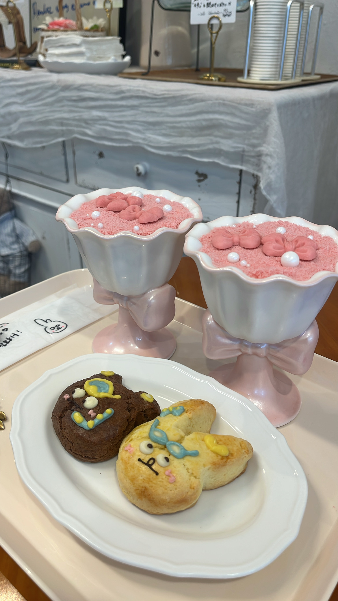
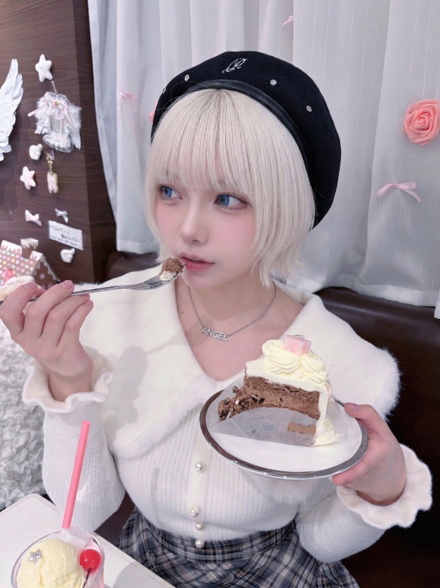

2026.01.02 — 最終更新
たいせつなこと
今日はちょっとだけ、まじめに書きます。
れんらく、したかったけど、うまくできなかった。
んー、でもこれだけは残しておきたかった。
ぱっと見は普通の日記に見えると思う。
いつかここに来た人への、手紙だよ。
▌
下書きの復元に失敗しました。
今日はちょっとだけ、まじめに書きます。
れんらく、したかったけど、うまくできなかった。
んー、でもこれだけは残しておきたかった。
ぱっと見は普通の日記に見えると思う。
いつかここに来た人への、手紙だよ。
▌
下書きの復元に失敗しました。
最近ちょっと気になることがあって、こっそり調べてる。お店のこと。うまく言えないんだけど、知れば知るほど前と違って見えてきた。
誰かに話したくても、なんか話せない感じがして。このブログ、多分誰も見てないからここに書いておく。
怖くないって言えば嘘になるけど、目を逸らすのも違う気がして。もう少し調べてみる。
常連のお客さんのことを考えていた。
毎週来てくれる人がいて、いつも同じ席に座って、オーダーも毎回同じで、帰るとき必ず「また来ます」って言ってくれる。
先週、その人が「ゆめさん、今日元気ないですね」って言ったんです。自分では普通のつもりだったのに、気づいてくれてた。
こういう仕事って、人を見てる仕事なんだなって思いました。わたしも、ちゃんと見なきゃな。
今日は完全オフで、ひたすらのんびりしてました。近所を散歩して、好きな音楽ずっと流して、途中でうとうとして。
最近なんか頭がうるさくて、こういう日がありがたかった。何も考えなくていい時間。
こういう何もない日が実は一番好きかもしれない。充電できた気がします。
黒瀬係長から「少し話したいことがある」って言われました。
なにかやらかしたかな〜ってドキドキしたんだけど、「評価していますよ」みたいな話で。「特別なポジション」について、今度詳しく話しましょうって。
嬉しいような、よくわからないような。なんだろ、特別なポジションって。
頑張ってきたことは認めてもらえてるみたいで、素直に嬉しかったです。
同期のちゃきとお休み合わせて遊んできました！

ふたりでお揃いで頼んだ。かわいすぎた
もともとゲームの話で盛り上がって仲良くなったんだけど、外で遊ぶのははじめてで。お昼食べて、雑貨屋さんでぐるぐるして、夜はご飯食べて帰った。
なんか、お店の外で会うと感じが違って面白い。ちゃきって仕事中はしっかりしてるけど、オフだとすごくゆるっとしてた笑
また行こうね、って言ったらちゃきが「毎月行こう」って言ってた。実現するといいな。
やった〜！蟠龍閣に来て1ヶ月たちました！最初はすごく緊張してたけど、みんなが優しくて本当によかった。
みじゅさんがいろいろ教えてくれて、ほんとに心強かったです。なのちゃんといずもさんとも仲良くなれて嬉しい。ちゃきも同期で一緒に頑張れるし、最高の環境です！
これからもよろしくお願いします！！🐉
音楽の話するって言ってたのにしてなかったな。
最近ずっとリピートしてるのは、静かめのインスト系。歌詞がないやつ。頭の中がうるさいとき、なんか落ち着くんですよね。
散歩しながら聴くのが一番好き。イヤホン片耳だけつけて、街の音と混ざって聞こえるときが特に。
そういう時間が最近の栄養剤です。
お休みの日にふらっとお店の近くを散歩してたら、すごくかわいいカフェを発見しちゃった。

チョコケーキ。量が多いかなと思ったけど、食べ始めたら早かった
窓から見えたケーキがあまりにも美しくて、気づいたら入ってた。お店の中が静かで、たまにこういう時間の方がよく見える。ひとくち食べたとき「ここに来てよかった」って思えるやつ。幸せって何かって聞かれたらこれって言える。
また来よう。ひとりで来よう。
緊張しすぎてフロア出る前に3回深呼吸しました笑
おかしいな、面接のときはそんなでもなかったのに。衣装着たら急に現実になった感じ。
でも、お客さんが「緊張してる？」って気づいて、やさしく話しかけてくれて。そこからはなんか楽になった。みじゅさんもずっとフォローしてくれてたし、ほんとに助かったな。
帰り道、足がじんじんしてたけど、なんか清々しかったです。明日も頑張ろ。
今日からブログはじめます！ゆめです。よろしくお願いします〜。
好きなものはスイーツと音楽と散歩。のんびりした性格なので、のんびり更新していくつもりです。よかったら見てくださいね♪
蟠龍閣、素敵なお店なのでぜひ遊びに来てください！